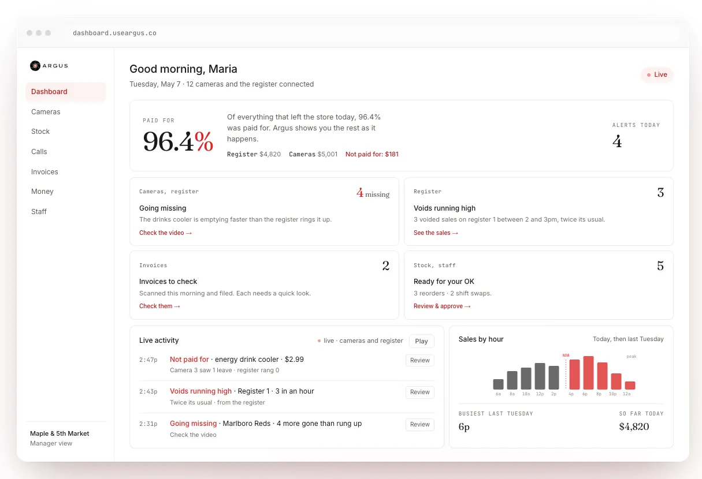
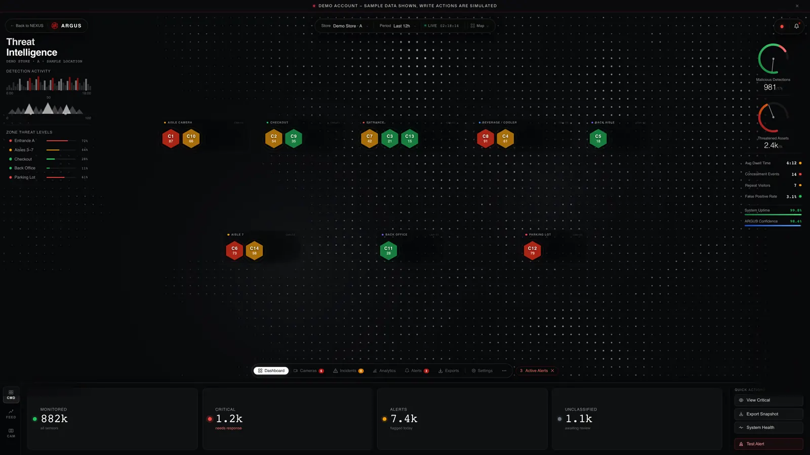
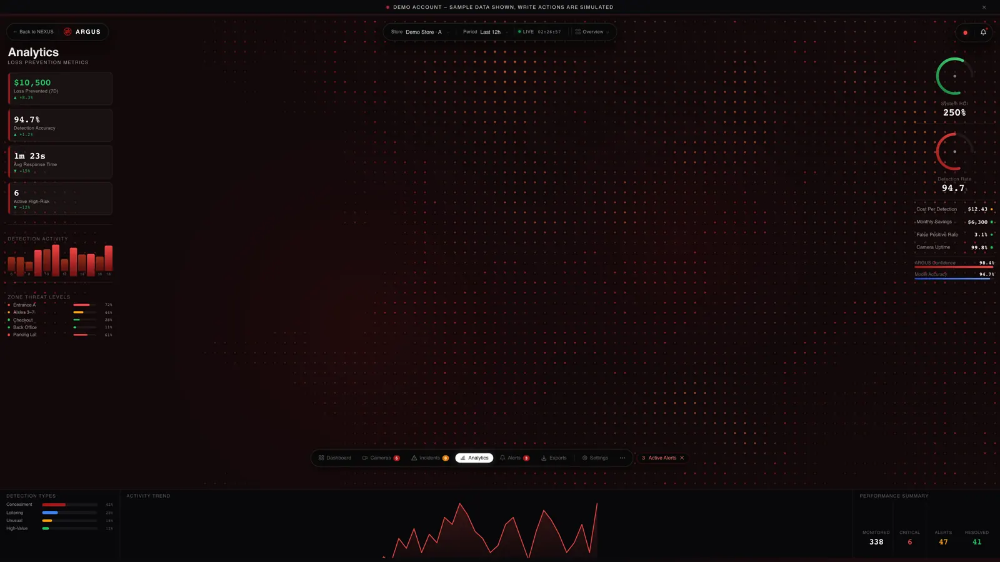

Argus sub-project
Argus Dashboard
One screen for running a store: loss prevention, stock, money and staff.
- Store portal
- Private repo

By the numbers
- About 70%of the code is mine
- 6apps in one: store portal, admin, phone, ops, status, email
What I did
- Wrote about 70% of the code. A small team wrote the rest.
- Turned a multi-app client portal, RION NEXUS, into one store screen and renamed it Argus.
- It includes a store portal, admin, phone app, ops app, status page and bulk email.
- Recent work: camera monitoring, register (POS) and QuickBooks links, invoice emails, faster pages and alerts.
In the app

Loss prevention: every camera by store zone, with a risk score. Demo account, sample data. 
Analytics for loss prevention. Demo account, sample data.